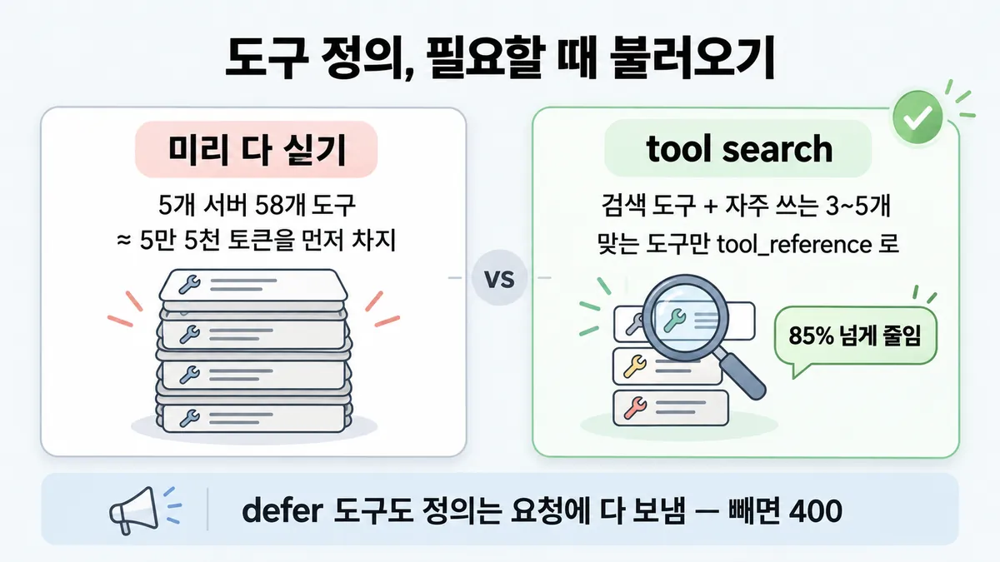
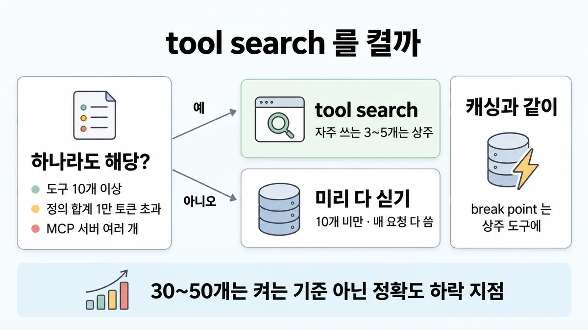

◆ 도구 미리 싣기 vs tool search
표시가 없는 문장은 공식 문서에서 확인한 내용이에요. 다른 표시는 읽는 법
왜 배우나 — 시험이 요구하는 것
시험 목표 3.8 점진 탐색과 통째 컨텍스트 · D3 연결 19%Evaluate progressive discovery vs. monolithic context strategy
이 개념으로 푸는 판단 (할 수 있어야 하는 것)
- 3.8② 도구 15개·정의 합계 약 1만 2천 토큰, 매 요청에 쓰는 건 3개 — 30~50개가 안 되는데 tool search 를 켜나? — 도구 정의 미리 다 싣기 vs tool search(필요할 때 불러오기)
한눈에


ELI5
공구함을 들고 다니는 수리공을 떠올려 보세요.
- 공구가 몇 개뿐이면 전부 허리에 차는 게 제일 빨라요.
- 공구가 수백 개면 다 차고 다닐 수 없고, 비슷한 걸 잘못 집기도 해요.
- 그땐 자주 쓰는 몇 개만 차고, 나머지는 창고 목록에서 찾아 꺼내 와요.
- 꺼내러 가는 시간이 조금 들어요.
- 이 쪽은 "언제 전부 차고, 언제 창고를 쓰나"를 모아 둔 곳이에요.
개념 설명
원리
미리 다 싣기
- 모든 도구 정의가 매 요청 컨텍스트에 들어감. 검색 단계가 없어 바로 부름.
- 한계 1 : 정의가 컨텍스트를 먹음. 5개 서버 58개 도구면 일 시작 전에 약 5만 5천 토큰.
- 한계 2 : 도구가 30~50개를 넘으면 올바른 도구를 고르는 능력이 떨어지기 시작. 흔한 실패 = 비슷한 이름의 도구를 잘못 고름.
tool search + defer_loading
- 요청엔 전체 정의를 다 보내되,
defer_loading: true인 도구는 컨텍스트에 안 넣음. 처음엔 검색 도구(약 500토큰)와 상주 도구뿐. - Claude 가 검색하면 API 가 맞는 도구를 전체 정의로 펼쳐 대화에 붙임. 앞부분(시스템 프롬프트)은 안 바뀌어 캐시가 유지됨.
- 대가 : 부르기 전에 검색 단계가 하나 더 → 지연(latency).
- 섞어 쓰기 : 가장 자주 쓰는 3~5개는 상주 → 흔한 경로는 검색 없이.
핵심 질문 두 개
- 매 요청에 필요한 도구가 전체의 일부인가, 전부인가?
- 정의가 차지하는 자리·선택 오류가 검색 단계의 지연보다 비싼가?
규칙과 판단


갈림길
켤까 [3.8②]
tool search
하나라도 해당하면 tool search : 도구 10개 이상 · 도구 정의 합계 1만 토큰 초과 · 도구가 늘수록 선택 정확도가 떨어짐 · MCP 서버 여러 개(200+ 도구) · 도구 목록이 계속 늘어남
이득이 지연보다 클 때
공식 두 목록이 겹치는 경계. 대가 : 도구를 부르기 전에 검색 단계가 하나 더 → 컨텍스트 절약·정확도 이득이 늘어난 지연(latency)보다 클 때 쓸 만함
미리 다 싣기
도구 10개 미만 · 모든 도구를 매 요청 씀 · 정의가 작음(합계 100토큰 미만)
무엇을 defer [3.8②]
서버 통째 defer
mcp_toolset 의 default_config 로 서버 통째 defer, 자주 쓰는 도구만 configs 로 상주
늦게 불러오지 않음
가장 자주 쓰는 3~5개는 늦게 불러오지 않음(non-deferred)
defer
나머지만 defer_loading: true
캐싱과 같이 [3.8②]
cache_control 을 어디에?tool search 를 켜도 앞부분은 안 바뀜캐시 유지
늦게 불러온 도구는 시스템 프롬프트 앞부분에서 빠지고 대화 중간에 붙음 → 앞부분 그대로 → 캐시 유지. break point 는 상주 도구에
400
defer 도구엔 cache_control 을 못 붙임(400)
흐름
그림 속 이름·금액·시간·토큰 수는 예시예요. 공식 한도·동작은 카드 본문 값이 기준.
장면 글로 보기
칸 : 요청 `tools` → 검색 도구 → 컨텍스트
블록 : 검색 도구, 자주 쓰는 3~5개, defer 도구
규칙 (요청 `tools`) : 늦게 불러올 도구까지 전체 정의를 매번 다 보냄
질문 : 도구 정의는 처음부터 전부 컨텍스트에 있어야 할까?
① 58개 미리 다 싣기 ≠
- 블록 : 도구 58개
- 시작 : 요청
tools— 쪽지 : tools: 58개 전체 정의 / defer_loading 없음 - 정의 : 도구 58개 → 컨텍스트 : 5개 서버 58개 도구 — 쪽지 : 정의 58개 / ≈ 5만 5천 토큰
- 건너뜀 : 검색 도구
- 끝 : 일 시작 전에 약 5만 5천 토큰 — 30~50개를 넘으면 올바른 도구를 고르는 능력도 떨어지기 시작
② tool search ✓
- 시작 : 요청
tools— 쪽지 : tools: 58개 전체 정의 / 55개 defer_loading: true - 상주 : 자주 쓰는 3~5개 → 컨텍스트 : 늦게 불러오지 않음(non-deferred) — 쪽지 : 검색 도구 약 500토큰 / + 상주 3개 정의
- 검색 : 검색 도구 : Claude 가 검색 — 쪽지 : BM25 질의: / "환불 처리"
- 불러옴 : 검색 도구 → 컨텍스트 : 맞는 도구를
tool_reference로 — 쪽지 : tool_reference: / refund_order 외 - 끝 : 5개 서버 58개 도구 ≈ 5만 5천 토큰을 tool search 로 85% 넘게 줄임
③ defer 도구를 요청에서 뺌 ≠
- 블록 : 검색 도구, 자주 쓰는 3~5개
- 시작 : 요청
tools— 쪽지 : tools: 검색 도구 + 상주 3개 / (defer 55개는 뺌) - 검색 : 검색 도구 : Claude 가 검색 — 쪽지 : BM25 질의: / "환불 처리"
- 불러옴 : 검색 도구 → 컨텍스트 : 펼칠 정의가 없음 — 쪽지 : 400 "not found in / available tools"
- 끝 : defer 도구도 정의는 요청에 다 보내야 함 — 없으면 400
규칙 원문 갈림 기준 (갈림길로 그린 규칙)
갈림 기준
아래 중 하나라도 해당하면 tool search
- 도구 10개 이상 · 도구 정의 합계 1만 토큰 초과 · 도구가 늘수록 선택 정확도가 떨어짐 · MCP 서버 여러 개(200+ 도구) · 도구 목록이 계속 늘어남
- 미리 다 싣기가 나은 때 : 도구 10개 미만 · 모든 도구를 매 요청 씀 · 정의가 작음(합계 100토큰 미만)
대가 : 도구를 부르기 전에 검색 단계가 하나 더 → 컨텍스트 절약·정확도 이득이 늘어난 지연(latency)보다 클 때 쓸 만함
섞어 쓰기가 기본 : 가장 자주 쓰는 3~5개는 늦게 불러오지 않음(non-deferred), 나머지만 defer_loading: true
- "30~50개가 안 되는데 켜나?" → 조건은 30~50 이 아니라 위 목록. 10개 이상이나 1만 토큰 초과 중 하나면 켬
더 깊이 : 판단 규칙 · 상황 변수 (설명)
판단 규칙
| 조건 | 답 | 근거 |
|---|---|---|
| 도구 10개 이상 · 정의 1만 토큰 초과 · 선택 정확도 하락 · MCP 서버 여러 개(200+) · 도구가 계속 늘어남 중 하나 | tool search | tool-search-tool 전체본 "Use tool search when any of the following apply" |
| 도구 10개 미만 · 모든 도구를 매 요청 씀 · 정의 합계 100토큰 미만 | 미리 다 싣기 | |
| tool search 를 켬 | 자주 쓰는 3~5개는 상주, 나머지 defer. 적어도 1개(보통 검색 도구)는 상주 | |
| 캐싱과 같이 씀 | break point 는 상주 도구에. defer 도구에 cache_control 을 붙이면 400 | |
| MCP connector 로 붙인 서버 | mcp_toolset default_config 로 서버 통째 defer | advanced-tool-use · tool-search-tool 전체본 MCP 절 |
| 가장 큰 병목이 "정의가 컨텍스트를 먹음" | tool search 부터 | advanced-tool-use |
상황 변수
| 변수 | 값 | 답 쪽 | 등급 | 근거 |
|---|---|---|---|---|
| 도구 수 | 10개 이상 | tool search 쪽 | 판단 규칙 1 | |
| 도구 수 | 10개 미만인데 정의가 1만 초과 | 두 목록이 겹침 | 미해결 · 추론 | 뒤집히는 때 1 |
| 한 요청에 쓰는 비율 | 전부 | 미리 다 싣기 | 판단 규칙 2 · 뒤집히는 때 3 | |
| 한 요청에 쓰는 비율 | 일부 (예 40개 중 3개) | tool search 쪽 | "loading only the 3–5 tools Claude needs" | |
| 캐시 적중 | 매 요청 적중 | 비용 차이는 작음, 이득은 자리·정확도 | 계산 | 뒤집히는 때 2 |
| 캐시 적중 | 호출 간격 > 5분 | tool search 가 비용도 크게 줄임 | 계산 | 뒤집히는 때 2 |
| 지연 민감도 | 아주 높음 | 자주 쓰는 도구는 상주로 검색 단계 회피 | advanced-tool-use | |
| 비슷한 이름의 도구 | 많음 | 선택 오류 → tool search 쪽 + 이름·설명 정리(■ 도구 설계) | advanced-tool-use · tool-search-tool 전체본 |
연습 문제
상담 에이전트에 MCP 서버 3개를 붙여 도구가 22개10개 이상, 정의 합계가 약 1만 8천 토큰1만 초과이다. 한 요청에는 보통 2~3개만 쓴다. 팀은 "30~50개가 안 되니 tool search 는 아직 이르다"고 한다. 어떻게 할까?
시험 대비
함정
- "30~50개를 넘어야 tool search" → 30~50 은 정확도가 떨어지기 시작하는 지점. 켜는 기준은 10개 이상 · 1만 토큰 초과 등
- "더 큰 컨텍스트 창 모델로 바꾼다" → 공식은 "더 큰 창을 기다리는 건 뻔해 보이는 방법"이지만 어떤 크기든 오염·관련성 문제가 남는다고 함 (원문은 긴 작업 맥락 — 도구 쪽 적용은 추론)
- "늦게 불러올 도구는 요청에서 빼서 토큰을 아낀다" → 정의는 다 보내야 함. 없으면 400 "not found in available tools"
- "tool search 를 켜면 캐시가 깨진다" → 반대. 앞부분이 안 바뀜
- "도구를 통합한 뒤에 tool search" (순서 규칙) → 공식 근거 없음. 공식은 "가장 큰 병목부터 — 정의가 컨텍스트를 먹으면 tool search". 비슷한 도구 합치기는 ■ 도구 설계
- "도구가 8개뿐이지만 정의가 커서…" → 공식 두 목록이 겹치는 경계. 설명 쪽 뒤집히는 때 1
신호
"Use tool search when any of the following apply:"
"Standard tool calling, without tool search, is a better fit when you have fewer than 10 tools, every tool is used in every request, or your tool definitions are small (less than 100 tokens total)."
"Claude's ability to pick the right tool degrades once you exceed 30–50 available tools."
"Keep your 3–5 most frequently used tools non-deferred so Claude can call them without searching first."
"The prefix is untouched, so prompt caching is preserved."
"You aggregate multiple MCP servers (200+ tools)."
"it delivers the best ROI when the context savings and accuracy improvements outweigh additional latency." (engineering 글)
"Waiting for larger context windows might seem like an obvious tactic."
더 깊이 : 뒤집히는 때 · 오답 재료 (설명)
뒤집히는 때
1. 도구는 8개뿐인데 정의가 1만 4천 토큰
- 조건 : 스키마가 큰 도구 8개, 합계 1만 4천 토큰, 한 요청엔 2~3개만 씀.
- 판단 : "1만 토큰 초과"(tool search 목록)와 "10개 미만"(일반 방식 목록)이 둘 다 걸림. 공식은 우선순위를 안 정함. 매 요청 일부만 쓰고 정의가 크니 tool search 쪽이 설 자리가 있다는 게 추론. 지문이 "모든 도구를 매 요청 씀"을 말하면 일반 방식.
- 등급 : 미해결 (두 공식 목록 충돌) · 방향은 추론
- 근거 : tool-search-tool 전체본
2. 캐시가 매번 맞으면 tool search 의 이득은 "돈"보다 "자리"
- 조건 : 도구 40개 × 평균 700토큰 = 정의 2만 8천. 매 요청 3개를 씀. tool search 쪽은 검색 도구 약 500 + 상주 4개(2,800) + 검색으로 불러온 3개(2,100).
- 계산 (입력 단가 기준 : 캐시 안 된 토큰 = 1배, 캐시 읽기 = 0.1배) :
- 미리 다 싣기, 캐시 적중 : 2만 8천 × 0.1 = 2,800
- tool search, 캐시 적중 : 앞부분 3,300 × 0.1 = 330 + 불러온 2,100 (그 턴엔 캐시 안 됨) = 2,430 → 약 13% 쌈
- 캐시가 안 맞을 때(호출 간격 > 5분) : 2만 8천 vs 5,400 → 약 81% 쌈
-
컨텍스트 자리 : 2만 8천 vs 5,400 → 약 81% 적음 (캐시와 무관)
-
판단 : 캐시가 매번 맞으면 비용 차이는 작음 → 켜는 이유는 컨텍스트 자리와 선택 정확도. "비용만 보고 tool search" 보기는 캐시 조건을 확인해야 함.
- 전제 : 도구 정의 크기 균일 · 불러온 도구는 그 턴에 캐시 안 됨(다음 턴부터는 대화 캐싱으로 적중 가능) · 검색 도구 약 500토큰은 engineering 글 값 · 캐시 쓰기 1회 비용은 뺌.
- 등급 : 계산 (0.1배 · 약 500토큰 · 정의는 입력 토큰으로 셈은 확인)
- 근거 : ko-pricing · advanced-tool-use · tool-search-tool 전체본
3. 도구 12개를 매 요청 전부 씀
- 조건 : 10개 이상이지만 모든 요청이 모든 도구를 부름.
- 판단 : 어차피 전부 불러오게 되니 defer 할 이득이 없음 → 미리 다 싣기. "10개 이상이면 무조건 tool search" 는 틀림.
- 등급 : (일반 방식 조건 "every tool is used in every request") · 두 목록이 겹치는 걸 이렇게 푼 건 추론
- 근거 : tool-search-tool 전체본 · advanced-tool-use "All tools used frequently in every session"
오답 재료
| 오답 | 왜 끌리나 | 왜 틀리나 | 등급 | 근거 |
|---|---|---|---|---|
| "도구가 30~50개를 넘어야 tool search" | 30~50 이라는 숫자가 문서에 있음 | 30~50 은 선택 정확도가 떨어지기 시작하는 지점. 켜는 기준은 10개 이상·1만 토큰 초과 등 | ||
| "더 큰 컨텍스트 창 모델로 바꾼다" | 다 넣을 수 있게 됨 | 창이 커도 오염·관련성 문제가 남음. 공식은 필요할 때 불러오기 | (원문은 긴 작업 맥락, 도구 적용은 추론) | effective-context-engineering |
| "늦게 불러올 도구는 요청에서 빼서 토큰 절약" | 안 보내면 더 쌀 것 같음 | 정의는 다 보내야 검색·펼치기가 됨. 없으면 400 | ||
| "전부 defer 해서 최대 절약" | 다 미루면 제일 작음 | 적어도 1개는 상주해야 함. 전부 defer 면 400 | ||
| "tool search 를 켜면 프롬프트 캐시가 깨짐" | 도구 목록이 바뀌면 캐시가 깨진다고 배움(■ 프롬프트 캐싱 · 규칙 ②) | defer 도구는 앞부분에서 빠지고 대화 중간에 붙음 → 앞부분 그대로 | ||
| "통합(도구 합치기)을 먼저 하고 tool search 는 그다음" | 순서 규칙처럼 들림 | 공식 순서 규칙 없음. "가장 큰 병목부터" | advanced-tool-use | |
| "tool search 는 별도 과금되는 서버 도구" | 서버 쪽에서 돌아감 | 따로 계량 안 함. 불러온 정의만 입력 토큰 | ||
| "10개 넘으면 무조건 tool search" | 첫 조건만 외움 | 모든 도구를 매 요청 쓰면 일반 방식이 나음 |
참고
어떻게 동작하나
요청의 tools 에는 늦게 불러올 도구까지 전체 정의를 매번 다 보냄. defer_loading 은 "컨텍스트에 무엇이 들어가나"만 바꿈
처음 컨텍스트 = 검색 도구 + 상주 도구뿐 → Claude 가 검색 → 맞는 도구(기본 5개)를 tool_reference 로 받아 API 가 전체 정의로 펼침
적어도 1개(보통 검색 도구)는 상주해야 함. 전부 defer 하면 400
검색 방식 : regex(Claude 가 Python 정규식을 씀) · BM25(자연어 질의) · 직접 만든 검색(임베딩 등, tool_reference 반환)
캐싱 : 늦게 불러온 도구는 시스템 프롬프트 앞부분에서 빠지고 대화 중간에 붙음 → 앞부분 그대로 → 캐시 유지. defer 도구엔 cache_control 을 못 붙임(400) → break point 는 상주 도구에 → ■ 프롬프트 캐싱
MCP connector 로 붙인 서버는 mcp_toolset 의 default_config 로 서버 통째 defer, 자주 쓰는 도구만 configs 로 상주 → ■ MCP connector
과금 : 검색 자체는 따로 안 셈. 불러온 정의만 보통 입력 토큰
숫자 (판단을 가르는 것만)
5개 서버 58개 도구 ≈ 5만 5천 토큰 → tool search 로 85% 넘게 줄임. 검색 도구 자체는 약 500토큰 · 요청당 3~5개 불러옴
도구 30~50개를 넘으면 올바른 도구를 고르는 능력이 떨어지기 시작
MCP 평가 정확도 : Opus 4 49% → 74% · Opus 4.5 79.5% → 88.1% (engineering 글)
개념
출처
- 가이드 목표 3.8 공식 시험 가이드 v1.0
- docs tool-search-tool
- advanced-tool-use 글
- effective-context-engineering
- 릴리스 노트
상태
- 추론 1줄(더 큰 창 함정의 적용)
미해결
- 두 공식 목록의 충돌(10개 미만인데 1만 초과 / 10개 이상인데 매 요청 전부 사용) 우선순위 문장 없음.
- "검색 도구 약 500토큰"과 "Opus 4 49% → 74%"는 docs 가 아니라 engineering 글(advanced-tool-use)에만 있음 — docs 페이지 본문엔 없음(grep -c "500 tokens|49%" → tool-search-tool en 전체본 0 · 같은 검색이 advanced-tool-use 에선 2 로 잡힘 · 검색 범위 = 두 파일, 제외 = docs 의 다른 페이지).
- 검색 단계가 더하는 지연의 공식 숫자 없음.
- 목록 3.8② "도구·지식에 파묻힌 에이전트의 답은 더 큰 창이 아니라 필요할 때 불러오기" 는 effective-context-engineering(긴 작업 맥락)을 도구에 적용한 것 → 적용은 추론.